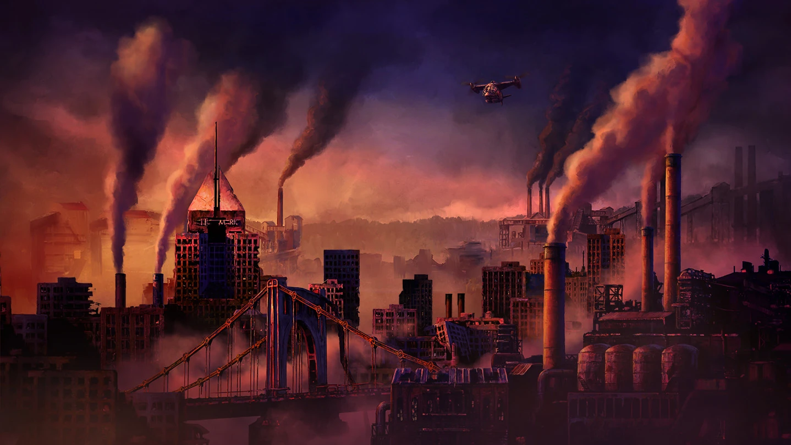
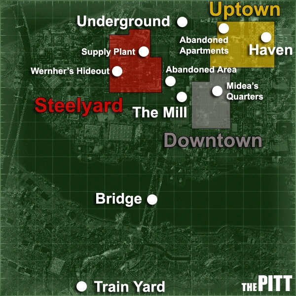
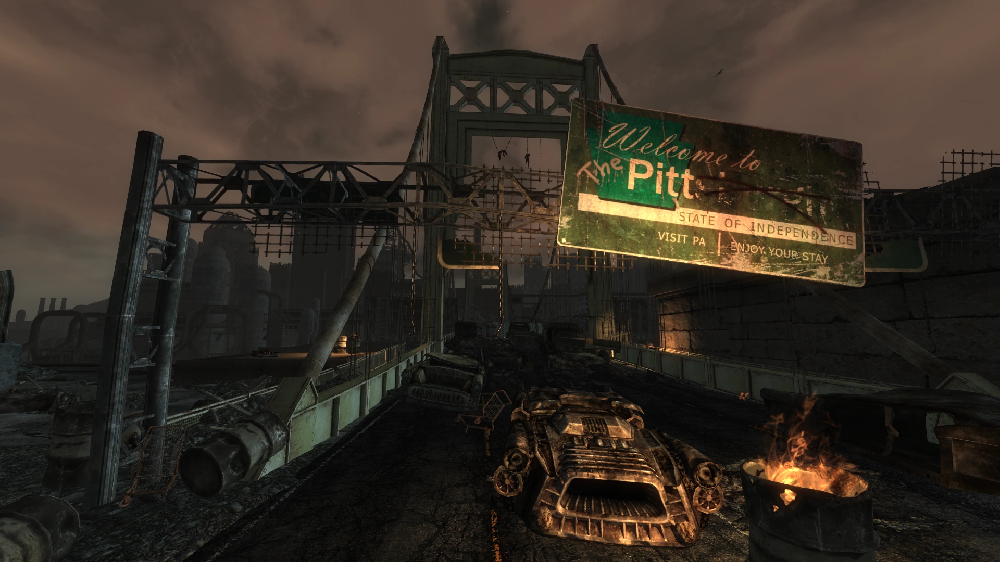
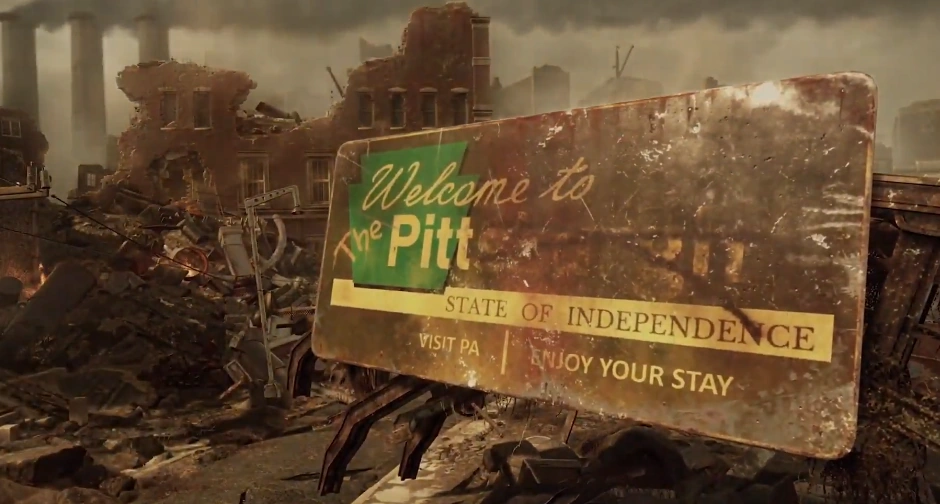
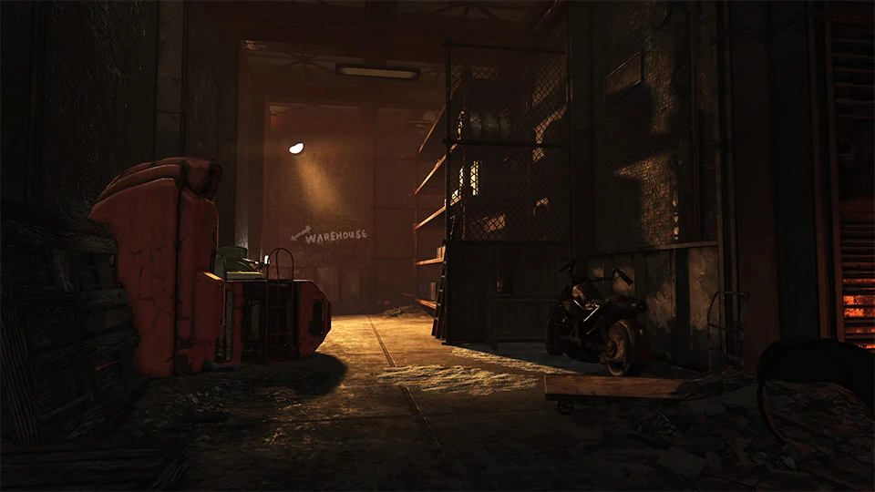
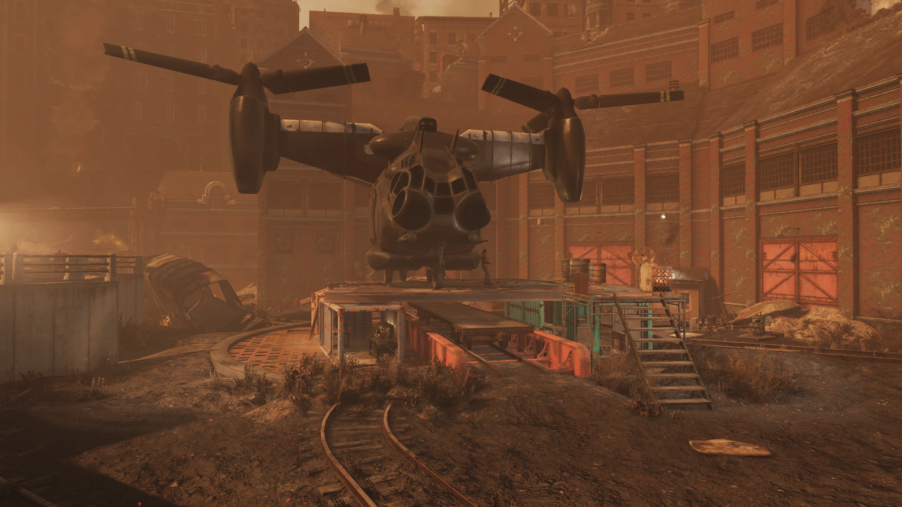
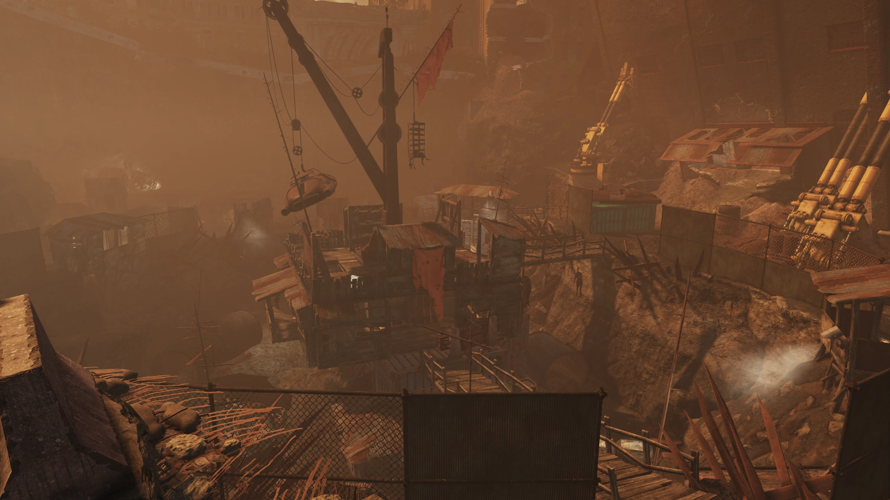
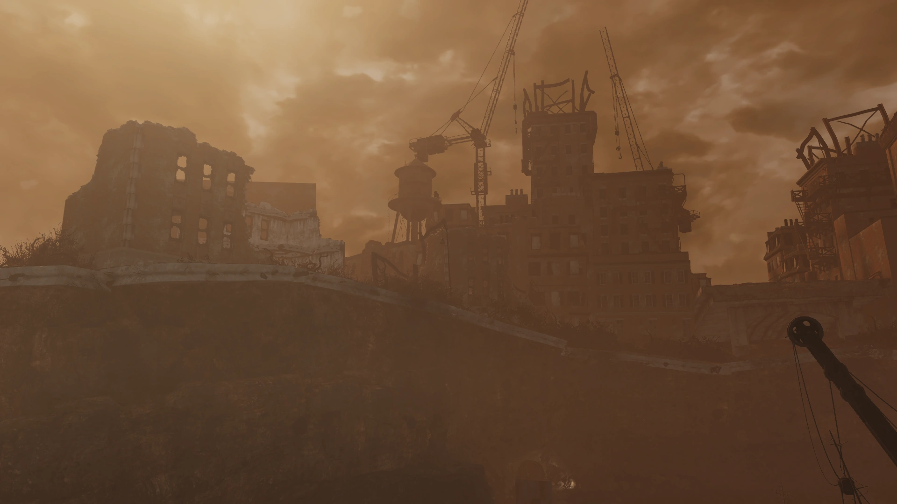
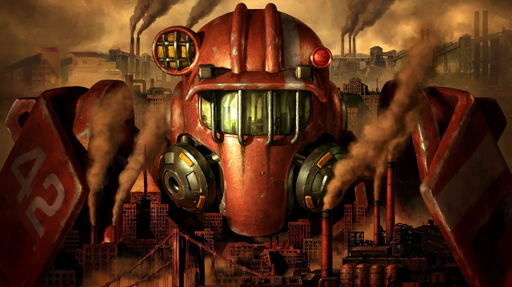

The Pitt
ピット
LOCATION DATA


Gateway to the West（西への玄関口）
ユニオン
ヘルキャット傭兵団
イシュマエル・アッシャー卿 (2255年～)
ワーナー (2277年・ルート分岐)
フェラル・グール
モールラット
獰猛な犬
Fallout 76
「ピット（The Pitt）」は、戦前のペンシルベニア州ピッツバーグの廃墟の内部に、レイダーが支配する地域として設立された居住地です。大戦の直後に地元ギャングによって設立され、2103年までに彼らは支配権を確立していました。2255年頃、当時のブラザーフッド・オブ・スティール（B.O.S.）の遠征部隊による「大虐殺（The Scourge）」によって居住者の大半が一掃されましたが、元B.O.S.のイシュマエル・アッシャーによって再び再興されました。2277年までに、同市の奴隷取引と鉄鋼業は東海岸における一大勢力へと成長しました。
戦前には「スティール・シティ（City of Steel）」や「西への玄関口（Gateway to the West）」と呼ばれていたこの町は、『Fallout 3』のアドオン「The Pitt」、及び『Fallout 76』の無料アップデート「Expeditions: The Pitt」の主要な舞台となっています。
歴史・背景
大戦とその余波
ピットはかつてペンシルベニア州ピッツバーグの街でした。ここは鉄鋼生産だけでなく、武器、弾薬、ベルチバード、パワーアーマー、ロボットの製造など、対中戦争（米中戦争）の軍事努力を支える一大産業拠点でした。その軍事拠点としての性質から、ピッツバーグは中国軍の核ミサイルの最優先ターゲットとなりました。
この大都市の近くに落ちた弾頭は、都市周辺の環境を劇的に変化させました。放射性降下物と、製鉄所からの重い産業公害が混ざり合い、この地域特有の極めて危険な環境が作り出されました。核による破壊はまた、建築のための十分なスペースと原材料を提供し、川は一見役立ちそうな水源を与えました。しかし、当時の住人たちは知る由もありませんでしたが、その川は放射性物質、変異原性物質（発がん性物質）でひどく汚染されていました。
大戦後、街は混沌に陥り、様々なレイダーギャングがそれぞれ独自の支配領域を確立し始めました。これらのギャングは、オハイオ川が分岐する地点に、徴用・奴隷化された労働者を使って「ピット」と呼ぶ居住地を建設し始めました。2103年までに、レイダーの「執行者」たちが拉致してきた市民の労働者を監視し、都市建設を強要するシステムが確立されました。
暴行と抑圧から逃れたい人々、そしてモノンガヒラ川、アレゲニー川、オハイオ川の汚染が深刻化したために、ペイジを中心とする地元住民たちは結束して街から逃れました。
このころ、アメリカ軍のオリバー・フィールズ大尉、フレッド・ラドクリフ軍曹、トンプソン軍曹からなる部隊が、街にいる市民の解放を試みましたが失敗し、重傷を負っています。ピッツバーグの廃墟からペイジと共に逃げ延びた地元住民たちは「入植者」となり、アパラチアの南に向かいながらより多くの生存者を集めていきました。彼らは後に2103年、荒れた境域（サベージ・ディバイド）に「ファウンデーション」という集落を形成することになります。
もうあそこには戻れない。
我々はピッツバーグの自宅から逃げ出さざるを得なかった。かつてピッツバーグと呼ばれていた場所から。放射能とあの狂人たちが、残されたものを地獄に変えてしまった。
我々は南へと向かい続ける。どこかで、腰を下ろしてやり直せる場所が見つかることを祈りながら。
ピットから逃げ出せて本当によかった。
ペイジが「ここを出るぞ」と言った時、狂ってると思った。外のほうが危険かもしれないのに、あんな壁（今はどうだか知らないけど、壁があったのよ）の外へ危険を冒して出ていくなんてと。
でもあの時、外には奴隷にされる以上のことが待ってるってペイジと一緒に信じてよかったわ。
ユニオンとファナティック
その後しばらくして、ピットは支配権をめぐって互いに争う二つの派閥の激しい紛争の舞台となりました。それは自らを「ユニオン」と組織した勤勉な生存者たちと、「ファナティック」として知られる狂暴なレイダーグループでした。ヘルキャット傭兵団もかつてファナティックと取引をしたことがありましたが、アパラチアから来た Vault 76 の居住者（Vault Dweller）が介入するためにやってきた際も、この紛争は猛烈に続いていました。
トログと汚染の影響
大戦から数十年が経過するにつれて、癌性の腫瘍や痕跡的な手足を持つ奇形の子供が生まれ始めました。そして年月が経つと、人口のほぼ全体が汚染された川の水によって引き起こされた遺伝的疾患や変異に苦しむようになりました。しかし、この変異は住民の懸念の最たるものではありませんでした。住民に広まった遺伝子疾患の中には、被害者を暴力的で原始的な状態に陥らせる神経学的状態があったのです。この状態に陥った人々は「ワイルドマン」と呼ばれるようになり、ピットの郊外で群れをなし、通りかかった者全員を獲物にするようになりました。
さらに悲惨だったのは、「トロግሎダイト変性感染症（Troglodyte Degeneration Contagion）」、通称「TDC」と呼ばれる病に苦しむ人々でした。この病原体の被害者は急速に退化し、「トログ」として知られる猫背の動物のような生物になってしまいます。生まれたばかりの赤ん坊は特にこの病気に罹りやすいのです。
人口が退化していくのと同様に、レイダーたちによって確立された秩序も退廃していきました。設立から50年以内に、人肉食者や強姦魔の戦争中の部族が街の支配的権力となり、存在したわずかな秩序は「強者が弱者を支配する」という形をとりました。これは結果的にピットを野蛮な自給自足の形へと落ち着かせたものの、街に恐ろしく悪名高い評判を残し、東海岸中からの旅人は常識としてこの場所を避けるようになりました。
大虐殺（The Scourge）
2255年頃、当時のパラディン、オウイン・リオンズが率いるブラザーフッド・オブ・スティールの遠征部隊が、キャピタル・ウェイストランドへの旅の途中でピットの郊外に到着しました。廃墟を偵察した後、リオンズは——彼の兵士たちには理由がわからないまま——都市への攻撃を命じます。
軍事行動というよりは虐殺に等しいこの作戦で、B.O.S.の兵士たちはマウント・ウォッシュから市内に侵入し、一夜にして市の人口の半分を虐殺しました。即座に降伏した者だけを容赦し、この作戦は「大虐殺（The Scourge / スカージ）」と呼ばれるようになりました。
その直後、B.O.S.は都市を去り、グレッグ・ベア（後のコディアック）を含む21人の健康な子供たちを連れ去り、イニシエイトの訓練に置きました。噂によれば、B.O.S.の部隊は廃墟から何らかの重要な資産を回収したと主張されていますが、それが何であったかはほとんど（あるいは誰も）知りません。たった一人の死傷者（イニシエイトのイシュマエル・アッシャー）を出しただけで、B.O.S.はこの痛ましい作戦を成功と見なしました。
しかし、この大虐殺は都市を静め、最も暴力的な住民を一掃することに成功した一方で、後に意外な人物によって掌握されることとなる権力の空白を残しました。
アッシャー卿の統治
イニシエイト・アッシャーは、大虐殺の最中に倒壊した建物に巻き込まれ、部隊の仲間からは戦死したと報告されていましたが、実は生き延びていました。パワーアーマーによって事故死は免れましたが、重傷を負い数日間昏睡状態に陥っていました。彼がようやく目覚めたとき、そこには粛清を生き延びた一人の女性の姿がありました。彼女は彼を死体だと思い込み、アーマーを剥ぎ取ろうとしていたのです。
そのスカベンジャーから話を聞いたアッシャーは、自身が閉じ込められていた建物が稼働中の製鉄所（The Mill）であることを知りました。B.O.S.では今までに見たこともない施設でした。彼は地元住民が都市を再建するのを手伝うことを決意しました。この目的のため、彼の奇跡的な生還と威圧的なアーマーを「神」のように崇めるようになったスカベンジャーたちを味方につけました。
目が覚めた。死んだと思ったんだろうな。
女がアーマーをはぎ取ろうとしていた。
ここはピットの「イン」だ。こいつらは「アウト」の集落から食料を漁りに来ている。ここは安全なんだと。
バカな。ここが何か分かっていないのか？建物の構造、あの煙突。まさか。
ここは製鉄所だ。
街はアッシャー卿のもとで急速に拡大しました。彼は鉄拳制裁で統治し、地元のギャングを自分の軍隊の指揮下に置き、弱者を奴隷として働かせて鉄鋼業を再建しました。その後の利益を使って外部の者を軍隊に採用し、外部の情報からより健康な奴隷を購入しました。
アッシャーは人口を維持するために新兵の採用と奴隷の輸入にほぼ完全に依存していましたが、このようなシステムの不安定さと危険性を認識していたため、プロパガンダを慎重に利用し、奴隷をおとなしくさせて反乱を避けました。彼は最終的な解放の約束を演説で定期的に行い、奴隷たちへの最も「進歩的」な政策として、ヘイブンの闘技場「ザ・ホール（The Hole）」で死闘を競い合い、自由を勝ち取って軍隊に入隊する機会を与えていました。
アッシャーはこの残酷な統治アプローチを「必要悪」であり、街の蔓延る健康危機が解決されるまでの一時的な措置だと考えていました。
ブレイクスルーは予期せず訪れました。アッシャーの妻であり主任研究員であるサンドラ・クンダニカが、「マリー」と名付けた娘を出産したのです。この乳児はTDCの症状を示さないばかりか、病気に対して「能動的な免疫」を持っているようでした。娘をピットの未来の可能性、兆しとしての象徴と見たアッシャーは、サンドラに娘の免疫を慎重に研究するよう命じました。
第二次蜂起（ワーナーの反乱）
ある時期、ワーナーという名の男がアッシャーの軍隊に加わり、ピットのレイダー階級の中でもより賢いメンバーの一人として評判を得ました。2277年のある時点より前に、ワーナーはクーデターを起こしてアッシャーを打倒しようと試みましたが、失敗に終わりました。
反逆罪への罰として、他の奴隷が誰も着けていなかった「奴隷の首輪」を彼に装着させ、ファウンドリーへと送りました。
この挫折にもかかわらず、ワーナーはピットを乗っ取るという計画を決して諦めず、ミディアという名の別の奴隷とともに2度目の企てのための下準備を始めました。やがて彼は電子工学の知識を活かして首輪を無効化し、キャピタル・ウェイストランドへと逃亡します。彼は外部からの支援を求めて無線放送を設定し、その救難信号を傍受した「孤独な放浪者（Lone Wanderer）」によって救助され、共に街へと潜入することになります。
放浪者はミディアと接触し、最も危険な任務である「スチールヤード」での回収作業からピットの階層構造の底辺をスタートしました。その実力を証明した後、彼らは闘技場（The Hole）での戦いに志願させられ、数度の戦いを経て無慈悲なレイダーたちを打ち負かし、ついに自由を勝ち取ります。
結果的にアッシャーに対し謁見する権利を得る形になりましたが、アッシャーは放浪者をワーナーの仲間だと正確に特定していました。放浪者はそこで「ヘイブン」に入ることを許され、アッシャーの娘を誘拐してワーナーに引き渡すか、あるいはアッシャーの計画に協力するかという選択を迫られました。その裏では、ワーナーが暴動を扇動し、ヘイブンのレイダー地区にトログをなだれ込ませるための地盤を整えようとしていたのです。
エリアとレイアウト構成
この場所は『Fallout 3』では2277年のアドオン舞台として登場し、『Fallout 76』の時点（2104年）ではまだ遠征先（Expedition）としての姿を見せています。時代とゲームによって行ける場所や状況が異なります。
Fallout 76 時代のエリア (2104年)
遠征（Expeditions）モード限定で利用可能であり、レスポンダーのベルチバードに乗って進入します。市内はファナティックとユニオンの間で絶え間なく戦闘が続いており、ファナティックがファウンドリーやサンクタムなど街の主要な場所を制圧し優位に立っている状況です。
- インダストリアル（Industrial）
- ザ・ペン（The Penn）: ペンシルベニアの「Penn」。ファナティックの労働施設や鉄道車両の基地。
- ザ・ファウンドリー（The Foundry）: 巨大な製鉄所。ファナティックの防衛の要であり彼らの本拠地。
- トレンチ（The Trench）
- トレンチの街（The Trench）: 工業用排水や毒によって変異したクリーチャーが徘徊する荒廃した市街地。トログの温床。
- ザ・サンクタム（The Sanctum）: 地面が崩落した大きな聖堂。ファナティックによって占拠されている。
- ザ・バスティオン（The Bastion）
51-BX: アブラクシオクリーナー
53-CC: アブラクシオクリーナー（工業用）
12-XX: スリザースベイン ※使用する場合は保護手袋を着用すること
21-DX: 肥料
99-ZX: 有害な液体
21-DXに関する注意：この製品は食用ではありません！「たった1回だけ」食べようとしたせいで、1週間ずっとトイレを出たり入ったりするハメになった奴がいる！
99-ZXに関する注意：これは、絶対に、12-XXの近くに置くな。
先週、バレルが12-XXの容器の隣に置かれていた。何が起こったと思う？火災だ。クソ火災だよ。俺たちはお前らの母親じゃないんだ。こんなことまで注意させないでくれ。
廃棄物の保管について
99-ZXと12-XXの近接配置に関する規則の違反が多すぎるため、99-ZXのバッチ処理は、今後トレンチの空の保管庫で行う。
これは決定事項だ。
君の不満は承知しているが、また火事を起こしてボスの怒りを買うのはゴメンだ。
大人しく規則に従ってくれ。頼む。
99-ZXのことで俺たちをトレンチに追いやる件について
トレンチへ降りる扉に鍵をかけたほうがいいと思う。
あそこの連中はどんどんイカれてきている。数日前、バレルをいくつか下ろしている最中に、誰かに肩を掴まれた。
彼を見た。いや、アレを見た。アレは目を持っていなかった。
俺は持っていたバレルを投げつけて、一目散に駆け上がった。
Fallout 3 時代のエリア (2277年)
2277年の放浪者が訪れた時、ピットはかつての栄華を失い、製鉄所の煙が空気をむせ返らせ、街の通りは放置された車両と瓦礫で塞がれていました。占有地域は逃亡を防ぐために周囲の廃墟からフェンスで隔離されており、サーチライトの光が街に広がるトログを遠ざけています。
- 列車操車場（Train yard）: 主な鉄橋は崩落し、トンネルも崩れているため鉄道での移動は不可能。少数のレイダーが奴隷の逃亡や敵の侵入を見張っている。
- ピットの橋（Bridge）: 「ワバッシュ橋」。アッシャーの支配にもかかわらず、ここにはワイルドマンが住み着いている。罠と地雷、獰猛な犬が配置されているが、下の致死的な放射能の川に飛び込むよりはマシである。
- ダウンタウン（Downtown）: 奴隷たちの大半が住む、陰惨で汚れた絶望的な場所。レイダーたちが支配し、奴隷は犬以下の扱いを受けている。上空の足場はレイダーたちの領域。
- アップタウン（Uptown）: 主にピットレイダーの楽園。トログの侵入を防ぐための照明と防衛設備が常にチェックされている。見捨てられた荒廃したアパート群が並ぶ。
- スチールヤード（Steelyard）: かつて鉄鋼生産の中心だった場所。現在はトログとワイルドマンが徘徊しており、ここで働くよう命じられた奴隷は死ぬか、あるいは食い殺される運命にある。
- ヘイブン（Haven）: アップタウンの中心の巨大な広場の奥にそびえ立つ高層ビル。アッシャーの本拠地であり、治療法の実験が行われている。入り口の前には巨大な彫像（炎）が配置されている。
- 地下（Underground）: スチールヤードとアップタウンをつなぐ忘れられた通路や下水道の数々。発電施設でもあり、現在は多数のトログが蔓延っている。
ターミナルエントリの記録
ピッツバーグの連中から手紙が来た。
あいつら、うちの機材を借りたがってる。見返りに石炭の一部を渡すと言ってきた。バカバカしい。機材を貸す気はないし、石炭も要らない。どうせあんな連中、もう長くないだろう。
[ ユニオンとの衝突 ]
ユニオンの連中がまた俺たちの領土に進入しやがった。前回の取引の後だから、少しは大人しくなるだろうと思っていたのに。甘かったか。
これ以上は容赦しねぇ。見つけ次第殺せ。あのバカどもに、誰がこの街を支配してるか思い知らせてやる。
[ ガードの配置 ]
サンクタムの防衛を強化しろ。
ユニオンの連中がいつ襲ってくるかわからんし、トログどももウロチョロし始めている。
これ以上奴らに侵入を許すわけにはいかない。
見つけた動くものは、ユニオンだろうがトログだろうが、問答無用で撃ち殺せ。
[ トンプソン軍曹への懸念 ]
あのトンプソンとかいう軍人が生きているという噂を聞いた。
彼がユニオンと手を結んだら厄介なことになるかもしれない。早めに見つけ出して始末しろ。
ファナティックの計画を邪魔する奴は誰も生かしちゃおけねぇ。
10年間の研究を経ても、彼らの病態について分かったことはわずかだ。TDC（Troglodyte Degeneration Contagion）の感染メカニズムは複雑で、環境中の変異原性物質と放射能の複合的な影響だと推測される。
大人たちは長期間かけて感染し、精神的な退行を示す。これが「ワイルドマン」と呼ばれる状態だ。最終的には四肢の形態が変化し、完全な「トログ」へと退行する。
赤ん坊の場合、事態はさらに深刻だ。免疫システムが未熟なため、環境に曝された新生児は数日から数ウイークでトログ化の兆候を示す。
現在、有望な抗体を持つ被験体（娘のマリー）から血清を開発しようと試みている。これがピットの未来を救う唯一の希望だ。
関係者・登場人物
※複数の時代と勢力にまたがるため、多くのキャラクターが存在します。
Fallout 76 (2104年時)
- ヘックス (Hex): ユニオンの指導的立場にある人物の一人。
- ダニーロ (Danilo): ピットに入るための案内人。
- エヴァ・ローズ (Ava Rose): ユニオンのメンバーで回収担当。
- スキッピー・ローリッチ (Skippy Roerich): ユニオンのメンバーで、ファウンデーションのペイジとは顔見知り。
- ファナティックの指導層: ワーナーなどの後のレイダーにつながる狂暴な一団。
Fallout 3 (2277年時)
- アッシャー卿 (Lord Ashur): イシュマエル・アッシャー。元B.O.S.の兵士であり、現在のピットの独裁的な指導者。
- ワーナー (Wernher): ピットのレイダーだったが造反し奴隷に落とされた男。第二次蜂起の首謀者。
- ミディア (Midea): スレイブの女性。ワーナーと結託し、彼のためのスパイとして居住区で活動。
- サンドラ・クンダニカ (Sandra Kundanika): アッシャーの妻であり研究者。ヘイブンで治療法を研究。
- マリー (Marie): アッシャーとサンドラの赤ん坊。TDC対する完璧な免疫を持つ。
- エベレット (Everett): スチールヤードの監督をするレイダー。口は悪いが働きには報いる男。
- メックス (Mex): ダウンタウンへのゲートの警備主任。
- レッドアップ (Reddup): 新米奴隷から身ぐるみを剥ぐ悪党レイダー。
- フライデー (Friday), ハリス (Harris): 武器や物資の交換商人（レイダー）。
- マリー (Marie): アッシャーとサンドラの子供。
ギャラリー








Fallout 3でおそらく最も心に残る（そして胃が痛くなる）選択を迫られる場所であり、さらに76の「Expeditions」の第一弾として私たちプレイヤーを再び絶望の鉄鋼都市へといざなってくれた、シリーズでも屈指の存在感を放つロケーションです！
大戦前の栄華から一転、川の水質汚染と放射線による「TDC（トログ病）」という呪いに見舞われ、徐々に人間性を失っていくというプロセスは、レイダーの暴力以上に恐ろしいピットの根幹的な恐怖ですよね。
B.O.S.のオウイン・リオンズによる「スカージ（大虐殺）」が、結果的にアッシャーという新たな地獄の王を生み出してしまった皮肉もたまりません。
そして何より、3本編で見せつけられるアッシャーの理想と現実。彼は確かに奴隷とレイダーという残酷な階級制度を敷いていますが、それは「いつか免疫を持つ赤子（自分の娘）の力で病を克服し、全員を救うため」という強烈な善意の裏返しでもありました。対するワーナーの反乱に加担すれば、奴隷は解放されるかもしれませんが、赤ん坊の運命はどうなるのか……。あのジレンマは、プレイヤー自身の倫理観をえぐってくる最高のアドオン体験でした。
76ではまだアッシャーが台頭する前の、ファナティックとユニオンが泥沼の抗争を繰り広げている時期が描かれており、ペイジたちが入植者としてファウンデーションに逃れてきた背景も直接体感できます。時代を超えてFalloutの歴史の重さと、そこで生きる人々の業の深さを感じさせてくれる、最高にスモッグが目に沁みる街ですね！
This article was created by translating and editing The Pitt, The Pitt (Fallout 3), and The Pitt (Fallout 76) from Nukapedia: The Fallout Wiki.
Licensed under the Creative Commons Attribution-Share Alike License (CC BY-SA 3.0).
© Overseer Mohi's Terminal — Fallout Lore Archive
コミュニティ維持のため、寄付を受け付けております。